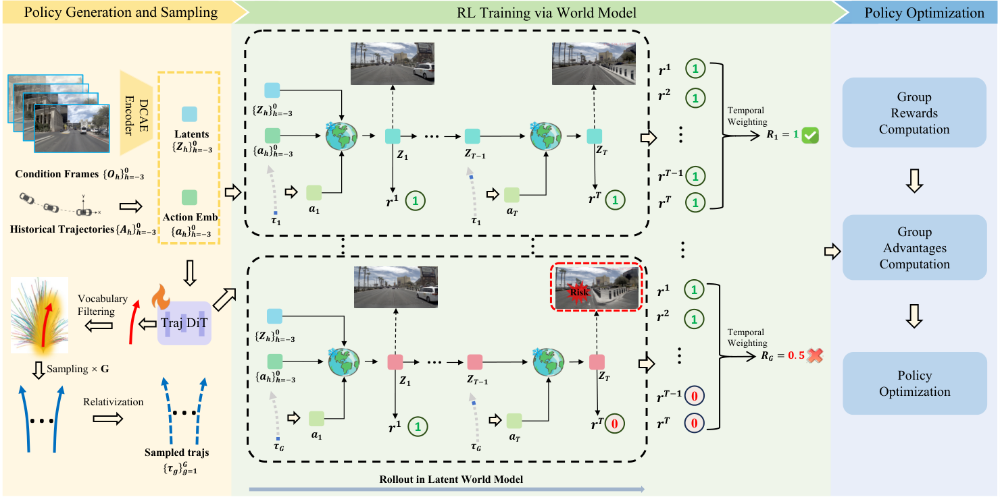

DreamerAD
简单摘要
我们推出了 DreamerAD，这是第一个潜在世界模型框架，它通过将扩散采样从 100 步压缩到 1 步，实现自动驾驶的高效强化学习，在保持视觉可解释性的同时实现 80 倍的加速。作者的主线做法是：根据现实世界的驾驶数据训练强化学习策略会带来高昂的成本和安全风险。
更关键的是，虽然现有的像素级扩散世界模型可以实现安全的基于想象力的训练，但它们受到多步扩散推理延迟（2 秒/帧）的影响，从而阻碍了高频 RL 交互。从结果上看，我们的方法通过三个关键机制利用视频生成模型的去噪潜在特征。


强化学习（RL）被广泛认为是解决自动驾驶中的长尾问题（例如分布转移和因果混乱）的有效方法。作者的主线做法是：根据现实世界的数据训练强化学习策略会带来高昂的试错成本和不可接受的安全风险。
更关键的是，为了应对这些挑战，我们提出了 DreamerAD，这是一个潜在世界模型框架，完全在视频生成模型的潜在想象空间内执行强化学习。从结果上看，这使得能够在潜在空间中进行低延迟 RL 训练，同时保持特征无损地可解码为高保真 RGB 帧，以实现严格的可解释性。
核心创新
这篇工作的创新不是简单堆模块，而是把问题重新定义为：我们推出了 DreamerAD，这是第一个潜在世界模型框架，它通过将扩散采样从 100 步压缩到 1 步，实现自动驾驶的高效强化学习，在保持视觉可解释性的同时实现 80 倍的加速。
第二个关键新意在于：我们的方法通过三个关键机制利用视频生成模型的去噪潜在特征。这使方法不只是能生成结果，更能解释为什么会有效。
再往后看，我们首先提出用于构建潜在空间预测表示的基础世界模型，然后描述所提出的 SF-WM，该模型显着减少采样步骤，同时在低步推理下保持预测保真度，最后设计。这也是它和纯工程拼装方案拉开差距的地方。
技术细节
方法主线可以概括为：第二个组件使用从预定义的高质量词汇中采样的轨迹来优化策略。
其中最关键的一环是：我们首先提出用于构建潜在空间预测表示的基础世界模型，然后描述所提出的 SF-WM，该模型显着减少采样步骤，同时在低步推理下保持预测保真度，最后设计。这样设计直接带来的作用是：Epona 是一种基于流匹配的自回归扩散模型，它统一了视频生成和轨迹规划，从而实现了以动作控制为条件的未来视频预测。
从训练和推理角度看，作者还特别处理了：然后通过时间投影模块处理图像嵌入以获得。
$$ Z = \text{DCAE-encoder}(O) \in \mathbb{R}^{B \times P \times L \times C}, \quad a = \text{MLP}(A) \in \mathbb{R}^{B \times P \times 3 \times D} $$
这组公式用于定义模型中的变量关系和训练目标。建议先看左侧要预测的对象，再看右侧每一项如何约束优化方向。
$$ x_t = t x_1 + (1-t)x_0,\quad v=\frac{dx_t}{dt}=x_1-x_0. $$
该公式用于定义核心计算关系。阅读时先看左侧目标量，再看右侧由 x_t、t、x_1、t 等变量构成的约束和聚合方式。
$$ d \sim 1/\mathcal{U}(\{1,2,4,8,\dots,K_{max}\}),\quad t \sim \mathcal{U}(\{0,d,2d,\dots,1-d\}). $$
该公式用于定义核心计算关系。阅读时先看左侧目标量，再看右侧由 d、U、t、U 等变量构成的约束和聚合方式。
$$ v_{target}= \begin{cases} x_1-x_0,& d=d_{min},\\ \text{sg}((v_1+v_2)/2),& \text{otherwise}. \end{cases} $$
该公式用于定义核心计算关系。阅读时先看左侧目标量，再看右侧由 x_1、x_0、d、v_1 等变量构成的约束和聚合方式。
$$ \mathcal{L}(\theta)= \mathbb{E}_{x_0,x_1,t,d} \left[ \omega(t)\|\phi_\theta(x_t,t,d)-v_{target}\|^2 \right], $$
这组公式用于定义模型中的变量关系和训练目标。建议先看左侧要预测的对象，再看右侧每一项如何约束优化方向。
$$ \Delta \theta = \min(|\theta_{\text{vocab}}-\theta_{\text{gt}}|,\,2\pi-|\theta_{\text{vocab}}-\theta_{\text{gt}}|) \le \theta_{\text{thresh}}. $$
该公式用于定义核心计算关系。阅读时先看左侧目标量，再看右侧由 关键变量 等变量构成的约束和聚合方式。
$$ r_{\text{pred}}^t=\text{RewardModel}(\text{traj}_{0:t},\text{his}_{-3:t}), $$
该公式用于定义核心计算关系。阅读时先看左侧目标量，再看右侧由 t、t、t 等变量构成的约束和聚合方式。
$$ \text{his}_{-3:t}=\text{his\_enc}(\text{concat}[z_{-3},z_{-2},z_{-1},z_0,\hat{z}_1,\dots,\hat{z}_t]). $$
该公式用于定义核心计算关系。阅读时先看左侧目标量，再看右侧由 t、z_0、z、z 等变量构成的约束和聚合方式。



实验结论
实验主要围绕一个核心问题展开：数据集 我们在 NavSim 数据集上评估 DreamerAD，该数据集基于 nuPlan 构建，提供来自 8 个摄像头的环视图像以及高质量 LiDAR 点云。
从主要对比结果看，NavSim v1采用预测驾驶员模型评分（PDMS）作为评估指标，聚合了多项驾驶相关标准，包括无碰撞（NC）、可驾驶区域合规性（DAC）、碰撞时间（TTC）、舒适度（Comf.）和自我进步（E）。定性结果和消融实验进一步说明：此外，我们的方法在关键安全指标方面显着优于 Epona，将无碰撞 (NC) 提高了 0.9，将碰撞时间 (TTC) 提高了 1.1，将可驾驶区域合规性 (DAC) 提高了 1.5。
理解评价
从整篇论文看，它的真正贡献是：我们推出了 DreamerAD，这是第一个潜在世界模型框架，它通过将扩散采样从 100 步压缩到 1 步，实现自动驾驶的高效强化学习，在保持视觉可解释性的同时实现 80 倍的加速，而不是单纯把扩散模型继续微调。作者把问题落在“分布外驾驶场景如何稳定生成”这个更关键的缺口上。
它最有说服力的地方在于：为了减轻轨迹级评分中奖励的稀疏性，我们为时间信用分配引入了阶梯级密集奖励。这说明论文的方法链路——3D 点云编辑、车辆补全、再到 RL 后训练——是前后闭合的，而不是各模块各自堆叠。
主要局限在于：当前方案仍受算力和时长限制，更适合离线生成而非实时闭环模拟。如果继续往前推进，一个自然方向是把更长时序、更低成本训练和更广泛的 OOD 场景覆盖一起纳入统一评估。
从整篇论文看，它的真正贡献是：DreamerAD 在 NavSim v2 上取得了 87.7 EPDMS，建立了闭环规划的新的最先进水平，验证了潜在空间中基于想象力的 RL 训练可以有效地学习安全驾驶行为，而无需现实世界的试错，开放，而不是单纯把扩散模型继续微调。作者把问题落在“分布外驾驶场景如何稳定生成”这个更关键的缺口上。
它最有说服力的地方在于：实验表明，这条路线确实能改善车辆编辑和新视角生成时的质量。这说明论文的方法链路——3D 点云编辑、车辆补全、再到 RL 后训练——是前后闭合的，而不是各模块各自堆叠。
以下相关论文可作为延伸阅读：